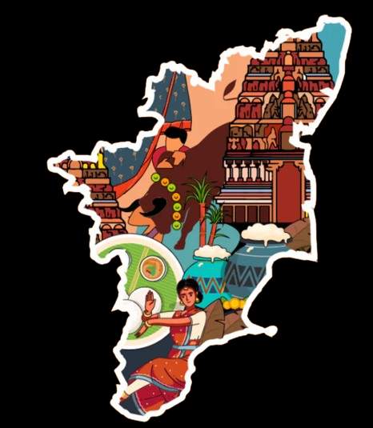

TAMILNADU

-
Tamil Nadu is the southernmost state of India. The tenth largest Indian state by area and the sixth largest by population, Tamil Nadu is the home of the Tamil people, who speak the Tamil language, one of the longest surviving classical languages and which serves as its official language. The capital and largest city is Chennai.
-
As the most urbanised state of India, Tamil Nadu boasts an economy with gross state domestic product (GSDP) of ₹23.65 trillion , making it the second-largest economy amongst the 28 states of India. It has the country's 9th-highest GSDP per capita of ₹275,583 and ranks 11th in human development index. Tamil Nadu is also one of the most industrialised states, with the manufacturing sector accounting for nearly one-third of the state's GDP.
-
Tamil Nadu covers an area of 130,058 km2 and is the tenth-largest state in India.[90] Located on the south-eastern coast of the Indian peninsula, Tamil Nadu is straddled by the Western Ghats and Deccan Plateau in the west, the Eastern Ghats in the north, the Eastern Coastal Plains lining the Bay of Bengal in the east, the Gulf of Mannar and the Palk Strait to the south-east, and the Laccadive Sea at the southern cape of the peninsula.Politically, Tamil Nadu is bound by the Indian states of Kerala, Karnataka, and Andhra Pradesh, and the union territory of Puducherry.